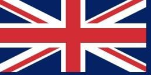
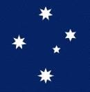

Ha ganado en dos ocasiones la Copa FIFA Confederaciones en las ediciones de 2001 y 2003


Australia
representa a Australia en el fútbol masculino internacional.
Dinamarca
A nivel continental, Dinamarca ha participado en diez Eurocopas.
★
Túnez
Es la selección nacional que representa a República de Túnez en el fútbol internacional masculino, ya que jugó su primer partido el 2 de junio de 1957 contra Libia, que terminó con Túnez ganando 4-2.